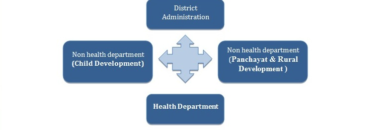

The theme leader is responsible for the overall execution of cycle specific DIPH steps. The theme leader has to take complete responsibility of the DIPH process
Note: There can be different theme leaders for different cycles or the health district can designate one person as the theme leader for the entire duration (year) of the DIPH process.Figure 1: Concept of Inter-Sectorial Convergence 
| Underlying causes of dominant Behaviors | Possible solutions |
|---|---|
|
|
| I | II | III | IV | V | VI |
|---|---|---|---|---|---|
| Introduction (approx. 10 minutes) | Setting the Basic Ground Rules (approx. 5 minutes) | Recap of Previous Meeting (approx. 10 minutes) | Sharing of Objective & Agenda (approx.15 minutes) | Concluding remarks (approx. 10 minutes) | Meeting feedback from the Participants (approx. 10 minutes) |
| Date &Time : | |||
| Venue: | |||
| Objective/ Purpose: | |||
| Time | Issued to be Discussed | Method of Discussion | Responsible person / Speaker |
| Topic Sub Topic | |||
| [Note: Agenda of the meeting should be circulated at least one week in advance] |
| Questions | Participant’s Feedback |
| Y (Yes) N (No) NA (Not want to Answer) | |
| The meeting purpose and objectives were clearly stated? | |
| Was the meeting time convenient for me? | |
| Was meeting place convenient for me? | |
| All meeting participants were actively involved? | |
| We used our meeting time effectively? | |
| Mention at least two aspects of this meeting were particularly good? | |
| Tell us two of the thinks/aspect/issues you dislike most in the meeting? | |
| Do you have any suggestions or additional comments about this meeting? | |
| [Note:- Circulate this form to the participants after lunch break, and collect it afterwards] |
| Questions | Participant’s Feedback (No. of Participants) |
| Y (Yes) N (No) NA (Not want to Answer) | |
| The meeting purpose and objectives were clearly stated? | |
| Was the meeting time convenient for me? | |
| Was meeting place convenient for me? | |
| All meeting participants were actively involved? | |
| We used our meeting time effectively? | |
| Total | |
| Percentage | |
| Aspects of this meeting were particularly good as per feedback from participants:
|
|
| Thinks/aspect/issues are dislike most by the participants:
|
|
| Suggestions or additional comments by the participants:
|
|
| Modification recommended for the next meeting in consultation with district administration:
|
| Form No. & Title | Details |
|---|---|
| Form I,Part A: ‘Document and database checklist’ | It includes review of three types of core documents with related sub-categories of each. This checklist will help to identify the relevant documents and data forms required for situation analysis |
| Form I, Part B- ‘Health System Capacity Assessment with supplement table’ | This forms is prepared to capture information on demographic characteristics, coverage indicators and assessment of health system capacity in terms of infrastructure, general resources (supplies, finance, technology) and human resources (personnel and skill level). Supplement table for identifying of sub-district (block) level performance in selected indicators. |
| Form No. & Title | Details |
|---|---|
| Form 2 – ‘Engage’ | To identify theme specific roles of primary & secondary stakeholders to enhance engagement & efficiency. Leads from the each department, NGO and private sector (if any) also be selected during the process. Recent efforts to address the issue also tobe identified. |
| Interactive Discussions- part 1 | Interactive Discussions- part 2 | Interactive Discussions- part 3 | Summarization |
|---|---|---|---|
| Define primary & secondary stakeholders for effective coordination. | Give the participants 10 minutes to note their role & responsibilities in papers (department wise). | Ask them to share their views one by one (department wise) with feedback/ suggestion by other participants. | Summarize the whole process by showing the filled up form II |
| Give some example (experience, best practices, success stories) for brainstorming | Fill up form II Appreciate innovative ideas | Entertain feedback to finalize the form |
| Form No. & Title | Details |
|---|---|
| Form 3 – ‘Define’ | To finalize priority areas to be improved upon, passible solution along with action points in terms of reaching target population, general resources (supplies, finance, technology) and human resources (personnel and skill level) needs to be set. Priority setting should be done keeping in mind within the given resources and mandate that is available with the district. |
| Recalling [ Previous steps i.e. situation analysis & MNCH priority settings need to reiterate in this step called recalling] |
Crowdsourcing [Collect information from the participants based on previous steps i.e. situation analysis & MNCH priority settings calledcrowdsourcing ] |
Summarization [ Summarization is the process to review the prepared document and entertain feedback to finalize] |
|---|---|---|
|
|
|
| Form No. & Title | Details |
|---|---|
| Form 4 – 'Plan' |
|
| Form No. & Title | Details |
|---|---|
| Form 5 – 'Follow-up' |
|